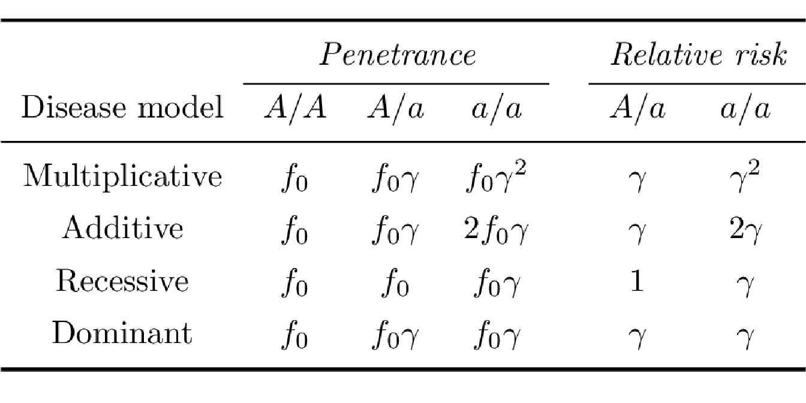
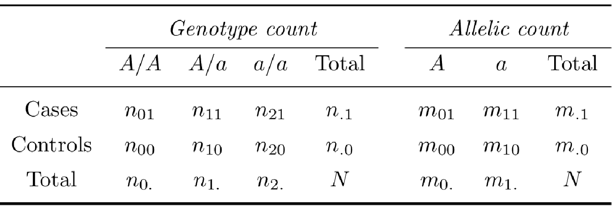

3.3 Disease penetrance and odds ratio
Considering a biallelic locus with alleles \(A\) and \(a\), the possible genotypes are then $A/A $, \(A/a\) and \(a/a\). The disease penetrance associated with a given genotype is the risk of disease in individuals carrying this genotype. Assuming a genetic penetrance parameter \(\gamma > 1\), the main disease penetrance models in association genetics can be summarized as:
Multiplicative model: The risk of disease is increased by a factor of \(\gamma\) with each additional \(a\) allele
Additive model: The risk of disease is increased by a factor of \(\gamma\) for genotype \(A/a\) and by a factor of \(2 \gamma\) for genotype \(a/a\).
Recessive model: The risk of disease is increased by a factor of \(\gamma\) for genotype \(a/a\) only.
Dominant model: The risk of disease is increased by a factor of \(\gamma\) both for genotype \(A/a\) and \(a/a\).
A commonly used measure of the strength of an association between phenotype and genotype is the relative risk (RR), which compares the disease penetrances between individuals carrying different genotypes (Table 3.1).
To estimate the RR it is therefore necessary to assess the disease penetrances which can only be derived directly from prospective cohort studies. In these studies, a group of exposed and unexposed individuals from the same population are followed up to evaluate who develop the disease of interest. However, in a case-control study, in which the case-control ratio is controlled by the investigator, it is not possible to make direct estimates of disease penetrance, and hence of RRs. In this type of study, the strength of an association is measured by the odds ratio (OR) (Clarke et al. 2011).
In a case-control study, the odds of disease are defined as the probability that the disease is present compared with the probability that it is absent in exposed versus non-exposed individuals. Because of selected sampling, odds of disease are not directly measurable. However, conveniently, the disease OR is mathematically equivalent to the exposure OR (the odds of exposure in cases versus controls), which can be calculated directly from exposure frequencies (Balding, Bishop, and Cannings 2008). Two types of OR can be calculated:
Allelic OR: It is estimated by comparing the odds of disease in an individual carrying allele \(A\) to the odds of disease in an individual carrying allele \(a\).
Genotypic OR: It represents the association between disease and genotype by comparing the odds of disease in an individual carrying one genotype to the odds of disease in an individual carrying another genotype.
The risk factor for case versus control status is the genotype or allele at a specific marker. For each SNP with minor allele \(a\) and major allele \(A\) in case and control groups comprising \(n\) individuals, it is possible to represent the data as a \(2 \times k\) contingency table of disease status by either allele (\(k = 2\)) or genotype (\(k = 3\)) count (Table 3.2).
Using the genotype count and allelic count exposed in Table 3.2, we define the allelic odds ratio (\(OR_A\)), the allelic relative risk (\(RR_A\)) as:
\[OR_A = \frac{m_{01}m_{10}}{m_{00}m_{11}}, \hspace{10pt} RR_A = \frac{OR_A}{1 - p_0 + p_0 OR_A},\] with \(p_0\) is the estimated disease prevalence.
The genotypic odds ratio for genotype \(a/a\) relative to genotype \(A/A\) and for genotype \(A/a\) relative to genotype \(A/A\) is estimated by: \[OR_{aa} = \frac{n_{21}n_{00}}{n_{01}n_{20}}, \hspace{10pt} OR_{Aa} = \frac{n_{11}n_{00}}{n_{01}n_{10}}.\]
Given a disease prevalence \(p_0\), the relative risk of disease in individuals carrying a genotype \(a/a\) compared with an \(A/A\) genotype is: \[RR_{AA} = \frac{OR_{AA}}{1-p_0 + p_0 OR_{AA}}.\]
Figure 3.2 illustrates the relationship between allele frequency and disease penetrance in terms of disease representation. Low-frequency alleles which also have a low penetrance are very difficult to identify with common approaches while high-frequency alleles are those most commonly identified.
Figure 3.2: Relationship between allele frequency and penetrance on disease representation.
References
Clarke, Geraldine M, Carl A Anderson, Fredrik H Pettersson, Lon R Cardon, Andrew P Morris, and Krina T Zondervan. 2011. “Basic Statistical Analysis in Genetic Case-Control Studies.” Nature Protocols 6 (2): 121.
Balding, David J, Martin Bishop, and Chris Cannings. 2008. Handbook of Statistical Genetics. John Wiley & Sons.